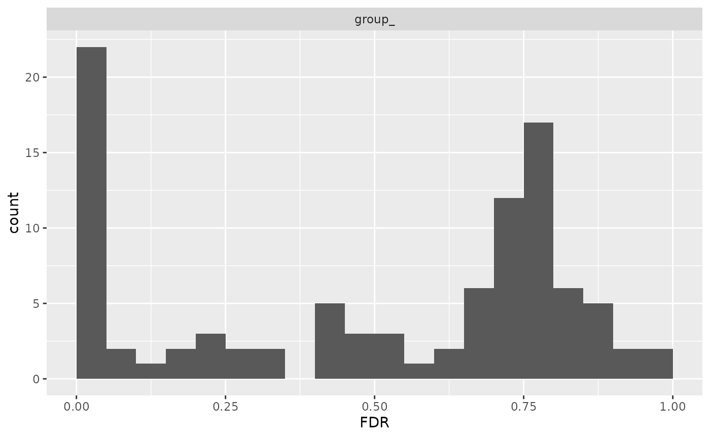

Under the hood: strategy, model and contrasts
Witold E. Wolski
2026-10-29
Source:vignettes/articles/LowLevelAPI.Rmd
LowLevelAPI.RmdPurpose
build_contrast_analysis() chains three steps:
- a strategy says which model to fit per protein,
e.g.
strategy_lm() -
build_model()fits it to every protein and returns aModel -
Contrastscomputes the contrasts from the models;ContrastsModeratedshrinks their variances with the empirical Bayes method
This article runs the steps by hand for the lm method.
Use them to inspect the per-protein models, to change one step, or to
add a new modelling backend. For analyses, use
build_contrast_analysis().
library(prolfqua)
sim <- sim_lfq_data_protein_config(Nprot = 100, seed = 1234)
lfq <- LFQData$new(sim$data, sim$config)
contrasts <- c(AvsC = "group_A - group_Ctrl", BvsC = "group_B - group_Ctrl")The facade
fa <- build_contrast_analysis(lfq, "~ group_", contrasts, method = "lm")The same, step by step
The lm method weights each protein intensity by its
number of peptides, the column lfq$nr_children_col().
strat <- strategy_lm(paste(lfq$response(), "~ group_"), weights = lfq$nr_children_col())
mod <- build_model(lfq, strat)
contr <- Contrasts$new(mod, contrasts, model_name = "lm")
contr_mod <- ContrastsModerated$new(contr)Both give the same result:
by_facade <- dplyr::arrange(fa$get_contrasts(), protein_Id, contrast)
by_hand <- dplyr::arrange(contr_mod$get_contrasts(), protein_Id, contrast)
all.equal(by_facade$diff, by_hand$diff)## [1] TRUE
all.equal(by_facade$p.value, by_hand$p.value)## [1] TRUEThe facade keeps the intermediate objects, so you can also take them
from there: fa$model is the Model,
fa$contrast the moderated contrasts.
Inspecting the models
mod$model_df holds one row per protein with its fitted
model and fit diagnostics.
mod$model_df |>
dplyr::select(protein_Id, has_model_fit, isSingular, nr_coef_not_NA, sigma, df.residual) |>
head()## # A tibble: 6 × 6
## # Groups: protein_Id [6]
## protein_Id has_model_fit isSingular nr_coef_not_NA sigma df.residual
## <chr> <lgl> <lgl> <int> <dbl> <dbl>
## 1 0EfVhX~3967 TRUE FALSE 3 1.40 7
## 2 0m5WN4~6025 TRUE FALSE 3 2.74 8
## 3 0YSKpy~2865 TRUE FALSE 3 1.33 8
## 4 3QLHfm~8938 TRUE FALSE 3 0.907 9
## 5 3QYop0~7543 TRUE FALSE 3 2.38 9
## 6 76k03k~7094 TRUE FALSE 3 2.28 9The analysis of variance per protein, and the distribution of its FDR:
head(mod$get_anova())## # A tibble: 6 × 10
## protein_Id factor Df Sum.Sq Mean.Sq F.value p.value isSingular nr_coef
## <chr> <chr> <int> <dbl> <dbl> <dbl> <dbl> <lgl> <int>
## 1 0EfVhX~3967 group_ 2 20.1 10.1 5.15 0.0421 FALSE 3
## 2 0m5WN4~6025 group_ 2 529. 264. 35.1 0.000109 FALSE 3
## 3 0YSKpy~2865 group_ 2 0.764 0.382 0.217 0.809 FALSE 3
## 4 3QLHfm~8938 group_ 2 5.83 2.92 3.54 0.0733 FALSE 3
## 5 3QYop0~7543 group_ 2 24.9 12.5 2.20 0.167 FALSE 3
## 6 76k03k~7094 group_ 2 9.87 4.93 0.948 0.423 FALSE 3
## # ℹ 1 more variable: FDR <dbl>
mod$anova_histogram("FDR")$plot
FDR of the per-protein analysis of variance.
The model coefficients:
head(mod$get_coefficients())## # A tibble: 6 × 8
## # Groups: protein_Id [2]
## protein_Id factor Estimate Std..Error t.value Pr...t.. isSingular nr_coef
## <chr> <chr> <dbl> <dbl> <dbl> <dbl> <lgl> <int>
## 1 0EfVhX~3967 (Intercep… 22.0 0.494 44.5 7.53e-10 FALSE 3
## 2 0EfVhX~3967 group_B -2.39 0.755 -3.17 1.57e- 2 FALSE 3
## 3 0EfVhX~3967 group_Ctrl -1.37 0.755 -1.82 1.12e- 1 FALSE 3
## 4 0m5WN4~6025 (Intercep… 16.9 0.599 28.2 2.68e- 9 FALSE 3
## 5 0m5WN4~6025 group_B 6.58 0.792 8.31 3.32e- 5 FALSE 3
## 6 0m5WN4~6025 group_Ctrl 3.04 0.792 3.84 4.96e- 3 FALSE 3Without moderation
Contrasts alone gives the unmoderated contrasts, which
the facades do not expose. Moderation stabilises the variances estimated
from few observations:
data.frame(
contrasts = c("Contrasts", "ContrastsModerated"),
FDR_lt_0.1 = c(
sum(contr$get_contrasts()$FDR < 0.1, na.rm = TRUE),
sum(contr_mod$get_contrasts()$FDR < 0.1, na.rm = TRUE)
)
)## contrasts FDR_lt_0.1
## 1 Contrasts 30
## 2 ContrastsModerated 33Changing one step
Replace the strategy to fit another model per protein, e.g. a robust
linear model with strategy_rlm(); the other steps stay the
same.
mod_rlm <- build_model(lfq, strategy_rlm(paste(lfq$response(), "~ group_")))
contr_rlm <- ContrastsModerated$new(Contrasts$new(mod_rlm, contrasts, model_name = "rlm"))
head(contr_rlm$get_contrasts()[, c("protein_Id", "contrast", "diff", "p.value", "FDR")])## # A tibble: 6 × 5
## protein_Id contrast diff p.value FDR
## <chr> <chr> <dbl> <dbl> <dbl>
## 1 0EfVhX~3967 AvsC 1.27 0.0637 0.328
## 2 0m5WN4~6025 AvsC -3.04 0.0000345 0.000844
## 3 0YSKpy~2865 AvsC 0.144 0.829 0.985
## 4 3QLHfm~8938 AvsC -0.116 0.857 0.985
## 5 3QYop0~7543 AvsC 0.0800 0.911 0.985
## 6 76k03k~7094 AvsC 0.884 0.169 0.519Adding a backend
A facade class wraps the steps of one method.
register_facade() adds it to the registry, after which
build_contrast_analysis(method = ...) finds it.
list_facades() shows the registry:
## [1] "binomial_firth_nested" "binomial_nested" "deqms"
## [4] "deqms_voom" "firth" "firth_nested"
## [7] "hurdle_nested" "limma" "limma_impute"
## [10] "limma_voom" "limma_voom_impute" "limpa"
## [13] "limpa_nested" "lm" "lm_impute"
## [16] "lmer_nested" "rfit" "rfit_impute"
## [19] "rlm" "ropeca_nested"Session Info
## R version 4.5.2 (2025-10-31)
## Platform: x86_64-pc-linux-gnu
## Running under: Ubuntu 24.04.5 LTS
##
## Matrix products: default
## BLAS: /usr/lib/x86_64-linux-gnu/openblas-pthread/libblas.so.3
## LAPACK: /usr/lib/x86_64-linux-gnu/openblas-pthread/libopenblasp-r0.3.26.so; LAPACK version 3.12.0
##
## locale:
## [1] LC_CTYPE=C.UTF-8 LC_NUMERIC=C LC_TIME=C.UTF-8
## [4] LC_COLLATE=C.UTF-8 LC_MONETARY=C.UTF-8 LC_MESSAGES=C.UTF-8
## [7] LC_PAPER=C.UTF-8 LC_NAME=C LC_ADDRESS=C
## [10] LC_TELEPHONE=C LC_MEASUREMENT=C.UTF-8 LC_IDENTIFICATION=C
##
## time zone: UTC
## tzcode source: system (glibc)
##
## attached base packages:
## [1] stats graphics grDevices utils datasets methods base
##
## other attached packages:
## [1] prolfqua_1.9.0
##
## loaded via a namespace (and not attached):
## [1] Rdpack_2.6.6 gridExtra_2.3.1 rlang_1.3.0
## [4] magrittr_2.0.5 clue_0.3-68 GetoptLong_1.1.1
## [7] otel_0.2.0 matrixStats_1.5.0 compiler_4.5.2
## [10] mgcv_1.9-3 png_0.1-9 systemfonts_1.3.2
## [13] vctrs_0.7.3 pkgconfig_2.0.3 shape_1.4.6.1
## [16] crayon_1.5.3 fastmap_1.2.0 backports_1.5.1
## [19] labeling_0.4.3 utf8_1.2.6 rmarkdown_2.32
## [22] nloptr_2.2.1 ragg_1.5.2 UpSetR_1.4.1
## [25] purrr_1.2.2 xfun_0.62 glmnet_5.2
## [28] jomo_2.7-6 logistf_1.26.1 cachem_1.1.0
## [31] jsonlite_2.0.0 progress_1.2.3 pan_2.0
## [34] broom_1.0.13 parallel_4.5.2 prettyunits_1.2.0
## [37] cluster_2.1.8.1 R6_2.6.1 bslib_0.12.0
## [40] stringi_1.8.9 RColorBrewer_1.1-3 limma_3.66.0
## [43] boot_1.3-32 rpart_4.1.24 jquerylib_0.1.4
## [46] Rcpp_1.1.2 iterators_1.0.14 knitr_1.52
## [49] IRanges_2.44.0 Matrix_1.7-4 splines_4.5.2
## [52] nnet_7.3-20 tidyselect_1.2.1 yaml_2.3.12
## [55] doParallel_1.0.17 codetools_0.2-20 lattice_0.22-7
## [58] tibble_3.3.1 plyr_1.8.9 withr_3.0.3
## [61] S7_0.2.2 evaluate_1.0.5 desc_1.4.3
## [64] survival_3.8-3 circlize_0.4.18 pillar_1.11.1
## [67] mice_3.19.0 foreach_1.5.2 stats4_4.5.2
## [70] reformulas_0.4.4 plotly_4.12.1 generics_0.1.4
## [73] S4Vectors_0.48.1 hms_1.1.4 ggplot2_4.0.3
## [76] scales_1.4.0 minqa_1.2.8 glue_1.8.1
## [79] tools_4.5.2 data.table_1.18.6.1 lme4_2.1-0
## [82] forcats_1.0.1 fs_2.1.0 grid_4.5.2
## [85] tidyr_1.3.2 rbibutils_2.4.1 colorspace_2.1-4
## [88] nlme_3.1-168 formula.tools_1.7.1 cli_3.6.6
## [91] textshaping_1.0.5 viridisLite_0.4.3 ComplexHeatmap_2.26.1
## [94] dplyr_1.2.1 gtable_0.3.6 sass_0.4.10
## [97] digest_0.6.39 operator.tools_1.6.3.1 BiocGenerics_0.56.0
## [100] ggrepel_0.9.8 rjson_0.2.23 htmlwidgets_1.6.4
## [103] farver_2.1.2 htmltools_0.5.9 pkgdown_2.2.1
## [106] lifecycle_1.0.5 httr_1.4.9 GlobalOptions_0.1.4
## [109] mitml_0.4-5 statmod_1.5.2 MASS_7.3-65